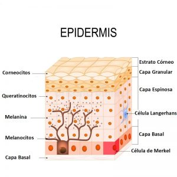
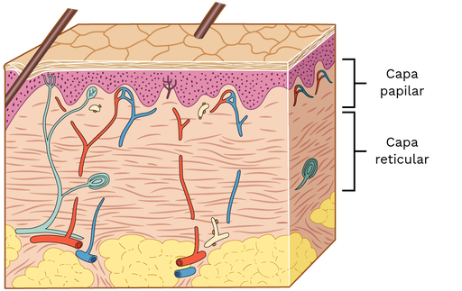
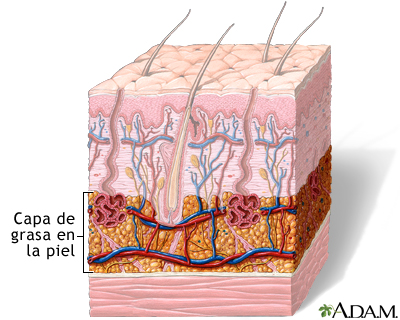
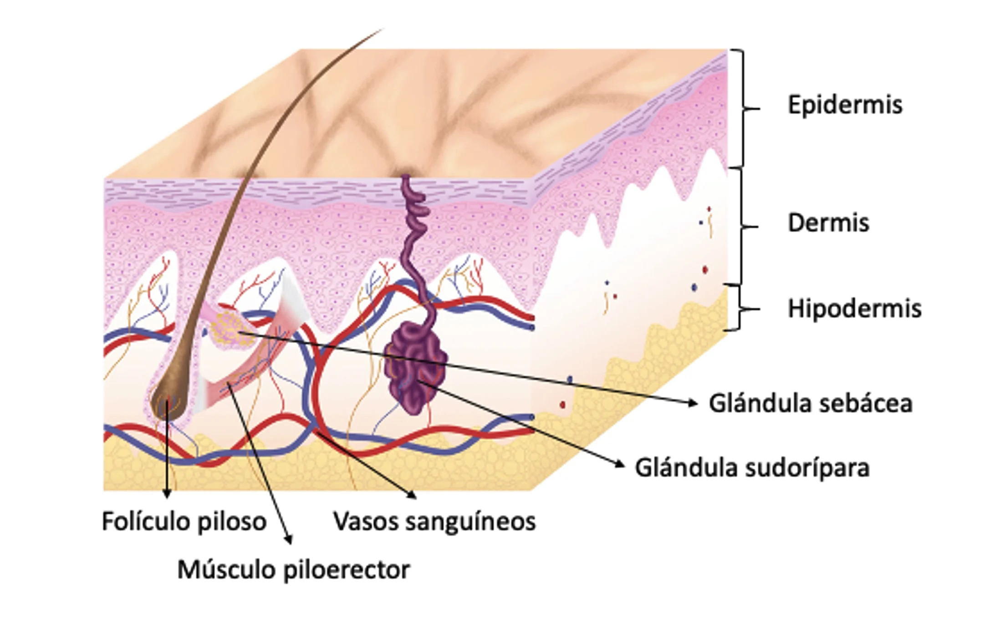
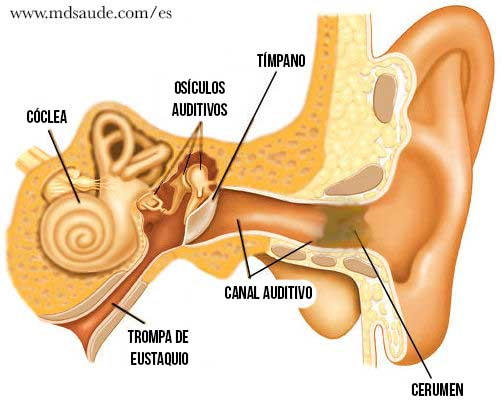

Sistema Tegumentario
Epidermis
La epidermis es la capa más superficial de la piel, constituida principalmente por epitelio escamoso estratificado queratinizado. Su función principal es actuar como barrera protectora contra agentes externos, pérdida de agua y microorganismos.
- Capas de la epidermis:
- Estrato basal (germinativo): capa más profunda, formada por células madre que proliferan y dan origen a las demás capas.
- Estrato espinoso: células unidas por desmosomas que aportan resistencia mecánica.
- Estrato granuloso: células que comienzan el proceso de queratinización, con gránulos de queratohialina.
- Estrato lúcido: presente solo en piel gruesa, zona translúcida entre granuloso y córneo.
- Estrato córneo: capa externa compuesta por células muertas queratinizadas, que se desprenden continuamente.
- Células principales: queratinocitos (95%), melanocitos (producción de melanina), células de Langerhans (inmunitarias) y células de Merkel (mecano-receptoras).
Dermis
La dermis es la capa intermedia de la piel, formada por tejido conectivo denso irregular que proporciona resistencia y elasticidad. Contiene vasos sanguíneos, terminaciones nerviosas, folículos pilosos, glándulas y fibras colágenas y elásticas.
- Capas de la dermis:
- Dermis papilar: capa superficial, más delgada, rica en capilares y terminaciones nerviosas, con papilas dérmicas que aumentan la superficie de contacto con la epidermis.
- Dermis reticular: capa profunda y más gruesa, formada por fibras de colágeno gruesas y elásticas que brindan soporte estructural.
- Funciones principales: nutrición de la epidermis, termorregulación, sensación táctil, y participación en la cicatrización.
Hipodermis (Tejido Subcutáneo)
La hipodermis es la capa más profunda de la piel, constituida principalmente por tejido adiposo y tejido conectivo laxo. Sirve de aislante térmico, reserva energética y amortiguador mecánico que protege órganos y estructuras subyacentes.
- Composición: adipocitos organizados en lobulillos, vasos sanguíneos y nervios.
- Función: conecta la piel con tejidos profundos como músculos y huesos, permite movilidad relativa y absorbe impactos.
Glándulas de la Piel
Las glándulas cutáneas son estructuras anexas que cumplen funciones específicas en la protección y regulación de la piel.
- Glándulas sebáceas: secretan sebo, una sustancia oleosa que lubrica y protege la piel y el cabello; se encuentran principalmente asociadas a folículos pilosos.
- Glándulas sudoríparas:
- Ecrinas: distribuidas en casi toda la superficie corporal, regulan la temperatura mediante la producción de sudor acuoso.
- Apocrinas: localizadas en axilas, región genital y areolas; su secreción es más viscosa y se activa en la pubertad, relacionada con el olor corporal.
- Glándulas ceruminosas: modificadas, presentes en el conducto auditivo externo, producen cerumen que protege el oído. 
- Glándulas mamarias: glándulas sudoríparas modificadas especializadas en la producción de leche.